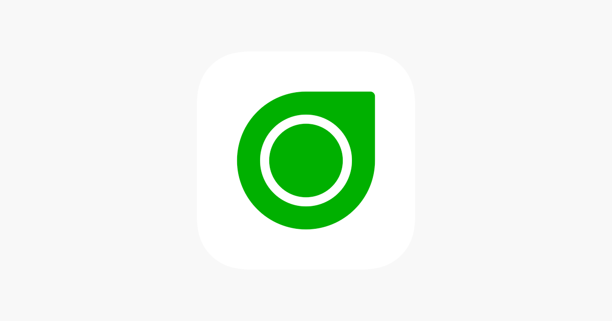

Continuous Glucose Monitoring
Track Your Health.
Live with Confidence.
Dexcom G7 is a powerful, all-in-one continuous glucose monitoring (CGM) system designed to provide real-time sugar levels without fingersticks. With predictive alerts and seamless app integration, it empowers users to make smarter health decisions every minute of the day.

What is Dexcom G7?
The Next Generation of Smart Monitoring
The Dexcom G7 provides real-time glucose readings directly to your smartphone or smartwatch, helping you stay ahead of highs and lows with industry-leading accuracy.
How To Use
Start Monitoring in 6 Steps
Prep the Site
Clean the back of your arm with an alcohol wipe and let it dry.
Apply Sensor
Use the auto-applicator to deploy the all-in-one sensor with a single click.
Pair Device
Open the Dexcom G7 app and enter the code from the sensor applicator.
30-Min Warmup
The fastest warmup in the market lets you start seeing data in just 30 minutes.
Set Alerts
Configure "Urgent Low Soon" alerts to get a 20-minute heads-up on drops.
Review Clarity
Use the built-in Clarity reports to track trends over 3, 7, 14, or 90 days.
VIDEO TUTORIAL
See Dexcom G7 in Action
App Capabilities
Core Features
Fast 30-Min Warmup
Don't wait hours for data; start tracking nearly twice as fast as other CGM systems.
Predictive Low Alerts
Advanced algorithms predict sugar drops 20 minutes before they happen for proactive care.
Food & Event Logging
Quickly log meals, exercise, and insulin doses to see exactly how they impact your levels.
Remote Sharing
Share your data with up to 10 followers, keeping family and doctors in the loop in real-time.
Benefits
Why Use Dexcom G7?
60% Smaller Design
The redesigned all-in-one sensor is discreet and comfortable for daily wear.
No Fingersticks
Zero calibrations required, meaning you can skip the painful finger pricks entirely.
12-Hour Grace Period
Flexibility to change your sensor on your own schedule with an extra 12-hour window.
Evaluation
Pros & Cons
Pros
- Industry-leading accuracy with the most predictive low alerts available.
- Seamless integration with Apple Watch and Garmin devices.
- Significant improvement in comfort and size over the G6 model.
- Built-in Clarity reporting for deeper health insights.
Cons
- Higher cost compared to some other CGM options without insurance.
- Adhesive may be too strong for very sensitive skin types.
- Bluetooth connection range can be sensitive to body positioning.
- 10-day lifespan is slightly shorter than the FreeStyle competitor.
Verdict
Final Review
Dexcom G7 is widely considered the gold standard for continuous glucose monitoring. While it has a shorter sensor lifespan (10 days) compared to some rivals, it compensates with the fastest warmup time and the most advanced predictive software on the market. Its ability to integrate directly with smartwatches makes it a favorite for active users and tech enthusiasts alike. If accuracy and early warning systems are your top priority, the Dexcom G7 is an unbeatable choice.